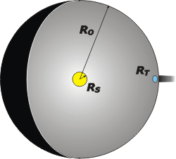

NO ME SALEN
(APUNTES TEÓRICOS Y EJERCICIOS DE BIOFÍSICA DEL CBC)
CALOR Y TERMODINÁMICA
|
|
|
| |
| Adicional NMS 2* - Calcular la temperatura del Sol conociendo el radio solar, la distancia entre el Sol y la Tierra y estimando la temperatura media de la Tierra. |
|
| |
Acá tenemos un ejercicio interesantísimo en que con unos pocos datos, que se pueden encontrar en cualquier libro te texto (y uno que podemos estimar fácilmente), se puede obtener la temperatura de la superficie del Sol... aplicando sencillamente la Ley de Stefan-Boltzmann.
Primero voy a presentar los datos y algunas definiciones importantes que usaré luego, así no interrumpo el desarrollo del problema. Acá van:
Sol: el radio del Sol, RS, vale 700 mil kilómetros; con ese dato podemos calcular el área de su superficie, SS. (Acordate que el área de una superficie esférica, S, es igual a: S = 4π . R²).
RS = 6,7 x 108 m
SS = 5,64 x 1018 m²
Tierra: el radio de la Tierra, RT, vale 6.400 kilómetros; con ese dato podemos calcular el área de superficie terrestre, ST; y el área de el disco de sombra, DT, que después te explico para qué sirve... pero que se trata de un disco circular que tiene el mismo radio que la Tierra. (Acordate que el área de un círculo es igual a: A = π R²).
RT = 6,4 x 106 m
ST = 5,15 x 1014 m²
DT = 1,29 x 1014 m²
Esfera de órbita: Supongamos la existencia de una esfera hueca que tuviera su centro en el Sol y un radio igual a la distancia entre el Sol y la Tierra, o sea, igual al radio de órbita de la Tierra, RO. Ese radio vale 150 millones de kilómetros; y el área de esa esfera, EO, se calcula como el de cualquier otra esfera.
RO = 1,5 x 1011 m
EO = 2,83 x 1023 m²
|
|
|
|  |
El esquemita, tal vez, te ayude a entender los conceptos que presenté y para qué voy a usarlos. La esfera grande gris, EO, es esa en la que el Sol reparte generosamente su energía radiante. (Ya sabemos que no hay tal esfera ni menos aún una superficie reflectante... pero la ponemos ahí sólo para hacer una medición).
El disquito azul es una Tierra chata, y sirve para cuantificar la cantidad de luz que la Tierra ataja. No importa qué relieve tenga la Tierra (ya sabemos que es esférica) lo que importa es cuánto captura... o, si querés, qué sombra proyecta. |
|
|
|
Ahí te dibujé un cachito de la sombra terrestre: es la sombra de un disco que tiene el mismo diámetro que la Tierra.
La potencia con que el Sol irradia hacia todos lados... eso se lo podemos preguntar a Stefan y a Boltzmann, que dirán:
PotS = σ . ε . SS . TS4
donde σ es la constante de Boltzmann, ε es el coeficiente de emisión que podemos aproximar a 1; SS es la superficie del Sol (desde donde irradia) y que ya sabemos cuánto vale. Y TS es la temperatura de esa superficie que es lo que queremos averiguar en este problema.
Pero de toda esa energía que sale del Sol, nosotros sólo podemos capturar una parte. Vamos a calcular qué fracción, XT, de toda la energía que sale del Sol, capturamos nosotros. Para ello basta con dividir el área del disco terrestre, DT, por el área de la esfera de órbita, EO.
XT = DT / EO
XT = 4,55 x 10-10
Eso quiere decir que de toda la energía que produce el Sol... nosotros apenas podemos tomar lo que nos llega, que es 0,000000000455 del total... menos de una milmillonésima parte. ¿Nos bastará?
Sí... nos alcanza... al menos por ahora. La clave central del planteo de este ejercicio consiste en argumentar que la energía que recibimos del Sol es prácticamente igual a la energía que nosotros mismos, la Tierra, perdemos por radiación. La cantidad que nosotros perdemos por radiación también debemos consultársela a Boltzmann... y a Stefan...
PotT = σ . ε . ST . TT4
donde σ es la constante de Boltzmann, ε es el coeficiente de emisión que podemos aproximar a 1; ST es la superficie de la Tierra (desde donde irradia), que ya sabemos cuánto vale. Y TS es la temperatura de esa superficie que es lo que tenemos que estimar. Y no es muy difícil: sabiendo que casi toda la superficie de la Tierra es agua de los océanos... pongamos unos 10 grados de promedio... 283 K, grado más... grado menos.
Ahora sí planteemos la igualdad que dice: la energía que nos manda el Sol es igual a la energía que perdemos... (si así no fuese, en poco tiempo nos congelaríamos o nos cocinaríamos).
PotT = XT . PotS
σ . ε . ST . TT4 = XT . σ . ε . SS . TS4
ST . TT4 = XT . SS . TS4
De esta última expresión, el único dato que nos falta es la temperatura de la superficie solar. La despejo y calculo:
TS4 = TT4 . ST / XT . SS
TS4 = (283 K)4 . 5,15 x 1014 m² / 4,55 x 10-10 . 5,64 x 1018 m²
TS4 = 1,28 x 1015 K4
|
|
|
|
|
|
Que resulta en una aproximación enorme al valor real.
Chisme: afinando cálculos los científicos del siglo XIX encontraron que la energía irradiada por la Tierra era leve, levísimamente, superior a la que le capturamos al Sol. De modo que la Tierra debía estar enfriándose lentamente. Uno de los físicos más reputados Lord Kelvin (el mismo de la escala de temperaturas) calculó de esta manera que la edad de la Tierra no podía ser superior a los 18 millones de años.
Cuando la comunidad científica recibió esta información... todos dieron vuelta la cabeza y miraron gravemente a Charles Darwin: su teoría de la evolución requería de un tiempo de vida en la Tierra muy superior a esos escasos 18 millones. La evolución natural requería miles de millones para explicar la biodiversidad de la Tierra y los fósiles del subsuelo. Los físicos, que manejaban datos muy robustos, le hacían lentamente el adusto gesto de noooo con la cabeza... pero Darwin les sostuvo la mirada sin mosquearse.
Fue Ernest Rutherford quien tuvo que darle la mala noticia... a Kelvin: existe otra fuente de energía para la Tierra... y es la radioactividad del interior. Un secreto que la Tierra tenía guardado y que era imposible que nadie hubiese imaginado hasta entonces. |
|
|
| |
|
|
*Este interesante ejercicio me fue advertido por mi amigo y colega Jorge Sztrajman. En muchos libros de texto y en Internet se encuentra un versión muy parecida pero en la que se utiliza el dato de la constante solar (CS) igual a 1,36 kw/m² o el de la constante solar media 400 w/m². En ésta, en cambio, se llega a este resultado, por demás interesante, a partir de 3 datos muy asequibles. |
|
|
|
| |
|
 |
Desafío: Conociendo la temperatura de la superficie solar... ¿cuánto valdrá la cantidad de energía que recibimos del Sol por unidad de tiempo y unidad de área? |
|
| |
|
| Algunos derechos reservados (en criollo: no podés publicarlo a tu nombre, ¿entendiste? Mirá que tengo un boga repesado, ¿eh?).
Eso sí, se permite su reproducción citando la fuente, o sea, papá. Última actualización ago-08. Buenos Aires, Argentina. |
|
|
| | |
|
|